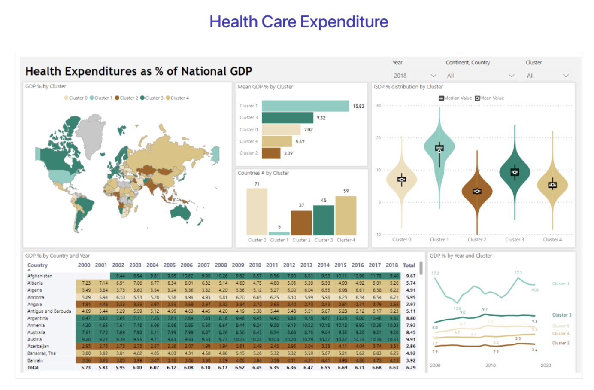

Welcome
ETF2121/5912 - S2 2024
ETF2121/5912 Data Analysis in Business
What is this course about?
- Problem-based learning
- Business analytics
- Preparing you with tools for data analysis regardless of your major
- Data wrangling, visualization, and analysis
- This unit is designed for the non-technical student with no coding background!
Example: Case Problem
Alumni donations are an important source of revenue for colleges and universities. If administrators could determine the factors that could lead to increases in the percentage of alumni who make a donation, they might be able to implement policies that could lead to increased revenues. Research shows that students who are more satisfied with their contact with teachers are more likely to graduate. As a result, one might suspect that smaller class sizes and lower student/faculty ratios might lead to a higher percentage of satisfied graduates, which in turn might lead to increases in the percentage of alumni who make a donation.
Problem to solve: Predict the alumni giving rate, given the graduation rate. Discuss your findings.
What you will learn?
- How to use R programming language for data wrangling, visualization, and analysis;
- How to use SQL language to query databases;
- How to use POWER BI as data dashboard to showcase your analysis;
- How to apply analytics skill to solve the business problem.
At the end of this course, you are able to

See you 🎡
ETF2121/5912 - S2 2024 - Welcome ETF2121/5912 - S2 2024 - Welcome ETF2121/5912 - S2 2024 - Welcome ETF2121/5912 - S2 2024 ETF2121/5912 - S2 2024 ETF2121/5912 - S2 2024